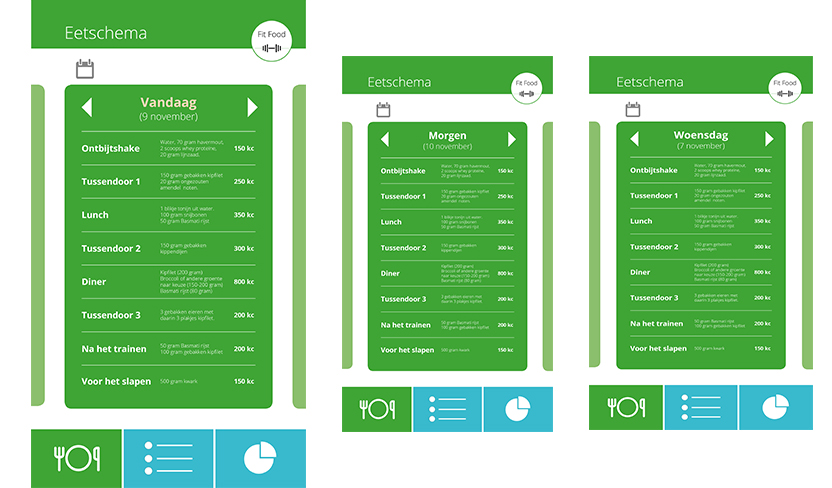
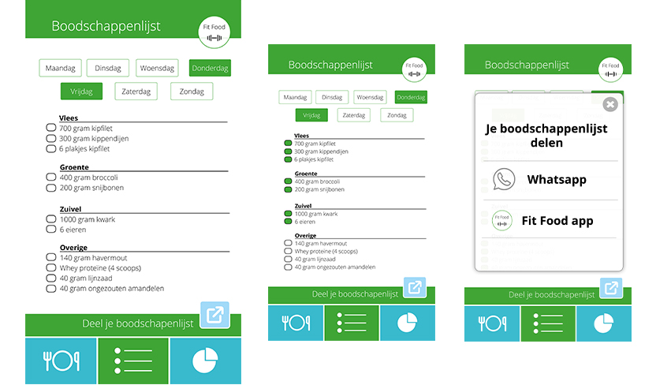
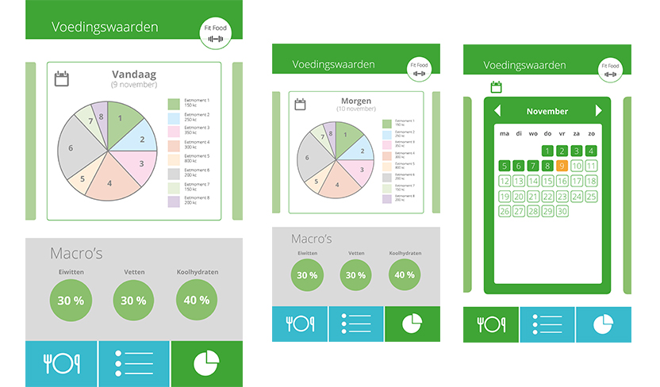

In het eerste blok kregen we een team project. Het project was om voor een sporter, in ons geval was dit een gewichtheffer, een applicatie te ontwikkelen aan de hand van zijn wensen. Onze gewichtheffer Teun heeft het druk met trainen en lesgeven. Daarbij moet hij zich aan een strak dieet houden en vind het daarom moeilijk om boodschappen te doen.
Voedingsmomenten
Wij ontwikkelde een app die een agenda functie heeft waarin staat wanneer Teun moet eten en wat hij moet eten. Deze agenda met voedingsmomenten word ingevuld door zijn diëtiste.

Boodschappenlijst
Een andere functie in onze app is de boodschappenlijst. Teun kan aangeven voor welke dagen hij boodschappen wilt doen en op basis van zijn voedingsschema wordt er een boodschappenlijst gemaakt. Een handige optie hier is dat je de boodschappenlijst ook kan delen. Zo zou Teun zijn lijst met ze moeder of vriendin kunnen delen als hij geen tijd heeft om naar de winkel te gaan.

Voedingswaarden
Een gewichtheffer wil natuurlijk wel bijhouden welke voedingswaarde hij eet. Dit is belangrijk in het proces om meer spieren te krijgen of juist minder vetten. Ook dit is een functie in onze app. Je ziet per dag welke voedingswaarde je eet en je kan aan een kalender openen om snel en met overzicht grotere stappen terug te doen om te zien wat je bijvoorbeeld een jaar geleden at aan voedingswaarde.

Procesverslag
Voordat we zijn begonnen met het maken van de app is er ook onderzoek gedaan. Verder hebben we meerdere iteraties gedaan in de app zelf en een goed testplan gemaakt en uitgevoerd. Lijkt het je interessant om het hele proces te lezen? Download dan het procesverslag!